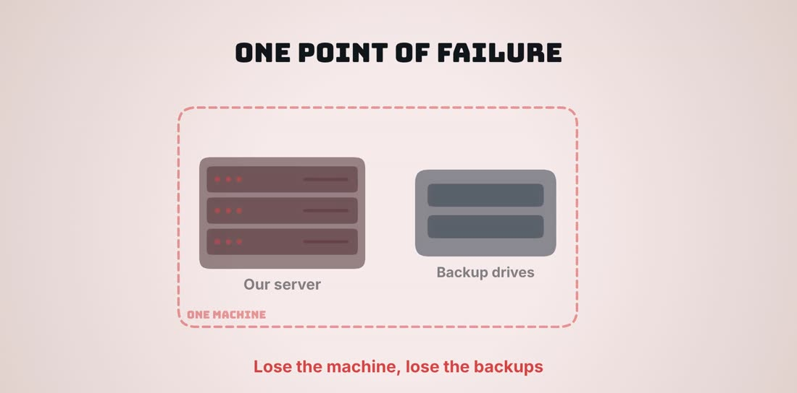

Principals
- Parent letters and newsletters
- Attendance and discipline summaries
- Walkthrough and observation notes
The lowest-cost way to give principals, the superintendent, finance and curriculum leaders their own AI agents: one machine that runs the agents, the district web apps and its own backups. It is included for comparison. We do not recommend it.
One machine plus a 10% cushion for price changes. Only $4,308 less than Option 2, which keeps its backups in a separate box.
Everything, including the backups, lives in one machine. A single failure stops all work, and losing the machine loses the backups with it. The fast drive that runs the agents is not mirrored. And there is no upgrade path to automatic failover. Saving $4,308 over Option 2 does not justify giving up that protection.
Each leader gets agents that carry out multi-step work. Shared agents serve the whole leadership team. Leaders review and approve everything an agent drafts.

From the video: every leader has their own agent, and shared agents serve the team.
The agents live on our own server. The reasoning is done by frontier models such as Claude and GPT, so the district does not buy AI hardware now. One shared usage pool with hard spending limits keeps the monthly cost predictable.
One physical machine runs many separate virtual servers, each with its own job. A new app means a new virtual server, not a new box.
The agents, the web apps and the backups all live in the same box. Most failures can be fixed, but each one stops all work, and some can take the backups with them.
Restore points are saved every few hours and nightly, but onto drives inside the same machine.
Any failure, including the single fast drive that runs the agents, stops every agent and web app until the part is replaced.
Parts are in stock at Newegg, so most fixes take a day or two, followed by a restore from the backup drives.
Fire, theft, a power surge or a failed controller can destroy the backups along with the server.
Add a weekly off-site copy of the backups, to existing district storage or a rotated USB drive, so losing the machine does not mean losing the data.

From the video: with the server and its backups in one box, a single loss takes both. Option 2 keeps the backups in a separate machine for $4,308 more.
The agents and AI models are the same in every option. What the extra money buys is protection: a mirrored fast drive, backups in a separate machine, and a path to automatic failover.
| Top tier | Option 2 | Option 3 | |
|---|---|---|---|
| Machines | Two servers + backup/referee box | One server + backup box | One machine |
| A storage drive fails | No impact | No impact | No impact |
| The fast drive fails | No impact (mirrored) | No impact (mirrored) | Everything stops until replaced |
| A server fails | Twin takes over within minutes | Pauses until repaired, usually hours | Pauses until repaired, a day or more |
| The machine is lost | Nothing lost | Restore from the backup box | Backups lost without an off-site copy |
| Backups | Separate box, about 33 TB | Separate box, 12 TB mirrored | Same box, about 21 TB |
| Leadership agents and AI models | Same | Same | Same |
| Local AI add-on | Two cards, $3,399.98 | Two cards, $3,399.98 | Two cards, $3,399.98 |
| Upgrade path | Already complete | Add a second server (~$6,500) | None; different platform |
| Recommendation | Best protection | Recommended minimum | Not recommended |
| One-time cost | $19,830.00 | $10,498.87 | $6,190.70 |
Runs the agents, the web apps and its own backups.
Three 12 TB enterprise drives that survive one drive failure, with 9 empty bays for growth. A 1200 W power supply is ready for two AI cards.
| One-time cost | Amount |
|---|---|
| The machine | $5,627.91 |
| Cushion for price changes (10%) | $562.79 |
| Total request | $6,190.70 |
All prices checked October 13, 2026. Tax and most shipping are not included. Every part showed Add to cart at Newegg; nothing is special order.
Either way, the cost is one shared district budget for the agents the group uses, not a separate bill for every person.
The district prepays credits with each AI company: Anthropic for Claude, OpenAI for GPT, xAI for Grok. Every agent and app draws from that shared pool.
A paid account such as ChatGPT or SuperGrok is linked to an agent by signing in with that account (OAuth). No API key is needed.
Start with a pooled API budget for shared agents and district apps. Add district-paid subscription accounts only for individual leaders whose own agents need heavy daily use, after checking each plan's terms.
Two AI graphics cards fit this machine too, letting leaders run AI on student records without anything leaving the district, and move routine work off paid cloud models.
Option 3 is listed so the full range is clear. For $4,308 more, Option 2 adds a mirrored fast drive, a separate backup machine, and a path to automatic failover. The top tier adds automatic failover from day one.
Every Option 3 part, quantity, price and buy link in one list.